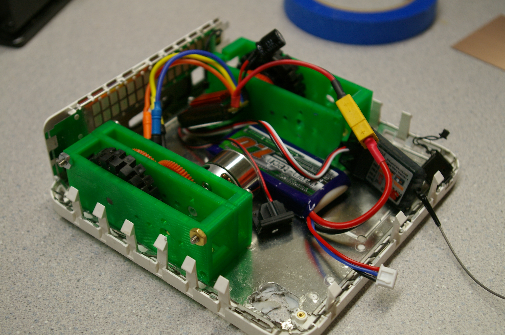
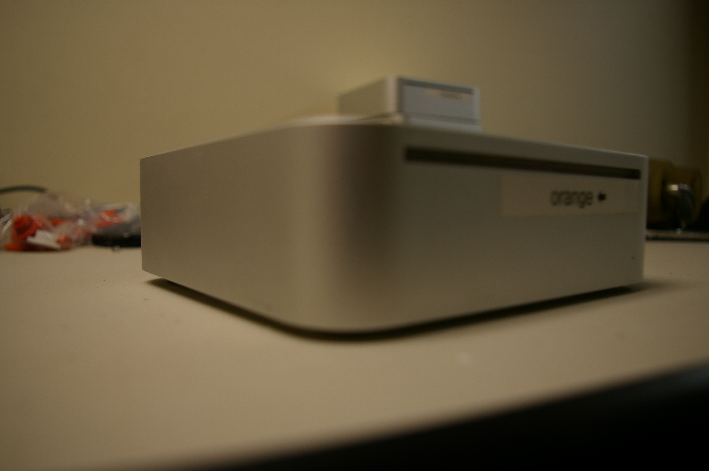

{% mark excerpt -%}
The mac bot was created in 24 hours in order to test a brushless drive train.
Starting out as a silly idea, it was soon promoted to a fully functional combat robot.
{%- endmark %}
<p>
The mac bot is one of those ideas that instantly felt right. Somebody brought
around a plethora of mac minis that were destined to be thrown away.  At the same
time we were experimenting with brushless motor drive trains. The challenge was set:
make the mac mini into a robot in the next 24 hours.



The "lower" half of the chassis is made from layers of plastic and aluminium sheet. 
Luckily the "top" half is a solid 1/8" aluminium shell.  I put the entire assembly
on the mill and cut out slots for wheels. The ground clearance is low enough to pose as a plain old mac mini.



A mac mini that drives around is plenty cute, but not quite a combat robot.  The solution to that is simple: 
add a saw blade.
